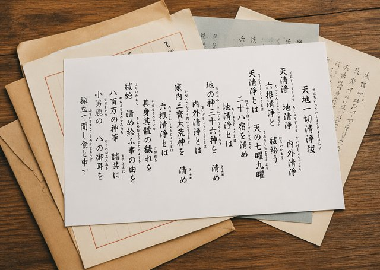
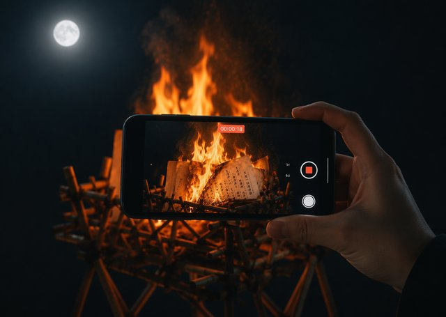

添える意匠について
NIKO TRACE のなぞり書きシートで扱ってきた意匠の中から、お手紙のテーマに合わせて一つを選びます。お任せいただくことも、系統をご指定いただくこともできます。


ニコ ツキヒ
あなたの想いを、シジルや祝詞とともに。
新月と満月の夜、清らかに焼納いたします。
これは何か
日本には古くから「お焚き上げ」という文化があります。役目を終えたものを、ただ捨てるのではなく、きちんとお別れをして火にかえす。効果があるから、ではなく、そうするのがふさわしいから。
NIKO TSUKIHI は、その心を、感情の手紙に向けた試みです。月のリズムに合わせて月に二度。満月の夜には手放したい想いを、新月の夜には迎えたい願いを。フォームから送っていただいたお手紙を、その想いに寄り添う意匠とともに、清らかに焼納いたします。
その様子は動画に記録し、限定リンクでお届けします。夜空の月と、あなたの言葉が炎にかえっていく時間。その記録が、お手元に残るすべてです。
プランをお選びいただくと、お手紙の送信フォームをご案内します。
フォームに直接入力するか、手書きのお手紙を撮影してお送りください。画像でお送りいただいた場合、内容は読まずにそのまま焼納いたします。各セレモニーの三日前までにご送信ください。
新月・満月の夜、お手紙を印刷し、想いのテーマに合わせた意匠を添えて、火にかえします。
数日以内に、セレモニーの動画リンクをメールでお届けします。
手放す
怒り、悲しみ、後悔、不安。
言葉にして、火にかえす夜。
迎える
始まり、健康、仕事、ご縁。
願いを言葉にして、託す夜。

あなたの想いのテーマに合わせて、神代文字・祝詞・シジルの中から一つを選び、お手紙に添えます。
あなたの想いのために、火と時間が使われる数分間。夜空の月の下で、静かに執り行います。

セレモニーの様子を動画に収め、限定リンクでお届けします。何度でも、いつでも見返せます。
NIKO TRACE のなぞり書きシートで扱ってきた意匠の中から、お手紙のテーマに合わせて一つを選びます。お任せいただくことも、系統をご指定いただくこともできます。
効果や御利益をお約束するサービスではありません。私たちがお約束できるのは、あなたの想いのために火と時間が丁寧に使われる、そのセレモニーそのものだけです。その時間に何を感じるかは、あなたの自由です。
宗教儀式ではありません。神社仏閣での正式なお焚き上げとは異なります。日本の焚き上げ文化に着想を得た、感情と向き合うための儀式的なセレモニーです。
お選びいただけます。手書きのお手紙を撮影してお送りいただいた場合は、内容を読まずにそのまま印刷して焼納いたします。フォームに直接ご入力いただいた場合は、印刷の過程で目に入る場合があります。
お申し込みフォームで、イニシャルのみ表示するか、何も表示しないかをお選びいただけます。
焼納したお手紙、およびお送りいただいたデータの返却はできません。送り出すことがセレモニーの目的です。
いつでも解約いただけます。お申し込み時の確認メールに記載のリンク、またはご連絡いただければ手続きいたします。
その回の焼納は行われません。次回に繰り越すこともできませんので、手放したいこと、迎えたいことがない月は、解約または休止をご検討ください。